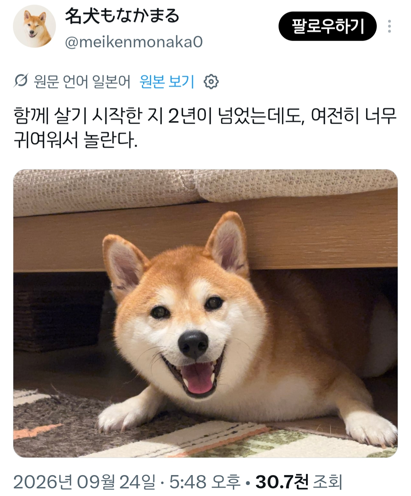
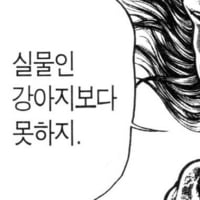
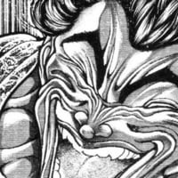
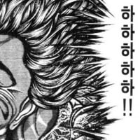

댕댕이와 몇년을 같이 살아도 적응 안된다는것
댓글
죽은지 일년넘었는데 여전히 귀엽다고 느껴짐
죽은지 2년 넘었는데 여전히 귀엽다
16년이 됬는데도 귀여움
ㄹㅇ 봐도 봐도 귀여움
우리집 강아지 귀여워서 10년을 깨물고 다녔었는데 애기 태어나니 뒷방 늙은이 신세 됨
몸이 한개라 애기 봐야해서 예전처럼 못 놀아줌

그래도 애기는 그날 당번이랑 딴방에서 자도 강아지는 안방 같은 침대에서 잠
그거때문에 우울증 걸린 개들 많음. 개들이제일 잘안다더라
뒷전으로 밀려나서 우울증 온 개들 ㄹㅇ불쌍....




맨날 똑같은 짓 하는데도 귀여움
보고싶다 우리 강아지 하늘나라에서 잘 지내고 있지?
아직도 폰 배경화면으로 해놓고 있다 ㅎㅎ
살아있을 땐 매일 아침에 만날 때마다 리즈 갱신이였지 보고싶다 ㅋ
나도